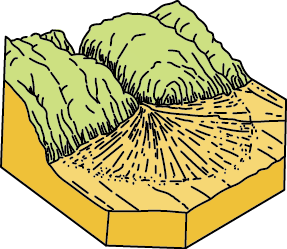

沖積扇（Alluvial Fan）地形解密
沖積扇（Alluvial Fan）是河流由山區流出至平地時，因坡度突然變緩、流速降低，所攜帶的砂石逐漸堆積而形成的扇形地形。

其頂點位於山谷出口，向外呈放射狀展開，且具有由上游粗顆粒（礫石）到下游細顆粒（砂、泥）遞減的特性；在形成過程中，河流因能量下降而分散成多條支流，常形成不穩定的辮狀河道，使扇面地形持續變動。
沖積扇雖地勢平坦、適合人類開發，但同時也是高災害潛勢區，容易受到土石流、洪水與河道改道等影響，特別是在豪雨或颱風期間，上游大量崩塌物會迅速堆積於扇面，對聚落安全造成威脅；在台灣，濁水溪沖積扇與花東縱谷沖積扇即為典型例子，顯示其在地形發育與人地關係上的重要性。